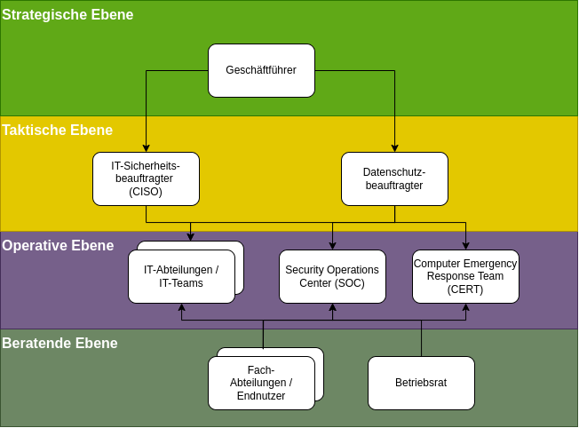
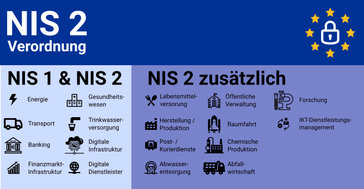

IT-Sicherheit
Dieses Modul behandelt die gesetzlichen Rahmenbedingungen und Zuständigkeiten im Bereich der IT-Sicherheit. Es werden relevante Gesetze, Standards und organisatorische Strukturen vorgestellt, die für die Implementierung und Aufrechterhaltung einer angemessenen qIT-Sicherheit in Unternehmen und Organisationen notwendig sind.
In einem gut strukturierten Sicherheitsmanagement sind verschiedene Rollen und Verantwortlichkeiten klar definiert:

Ein SOC ist eine zentrale Einheit, die für die kontinuierliche Überwachung und Verbesserung der IT-Sicherheitslage zuständig ist:
Ein CERT oder CSIRT (Computer Security Incident Response Team) ist darauf spezialisiert, auf IT-Sicherheitsvorfälle zu reagieren:
In der digitalen Welt gewinnen Gesetze und Standards zur IT-Sicherheit an Bedeutung. Angesichts wachsender Cyberbedrohungen sind die rechtlichen Anforderungen verschärft worden, da IT-Sicherheit nicht nur eine technische, sondern auch eine unternehmerische und gesellschaftliche Verantwortung ist.

Im Bereich der IT-Sicherheit haben sich verschiedene internationale Standards und Frameworks etabliert, die Organisationen bei der systematischen Umsetzung von Sicherheitsmaßnahmen unterstützen.
Anders als Gesetze sind die meisten Standards nicht verpflichtend, werden aber oft von Kunden, Partnern oder Aufsichtsbehörden erwartet und können einen Wettbewerbsvorteil darstellen.